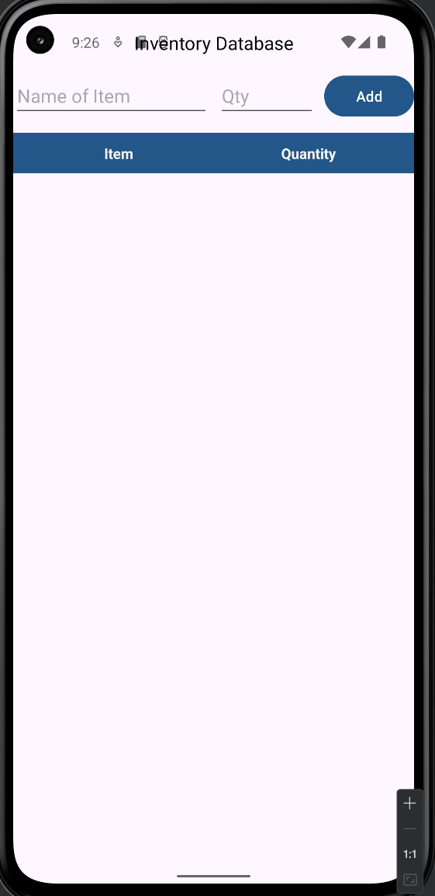
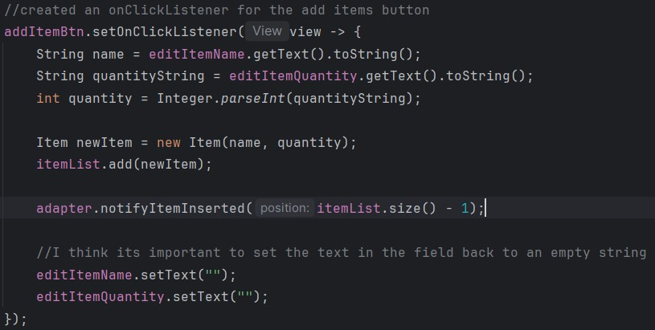
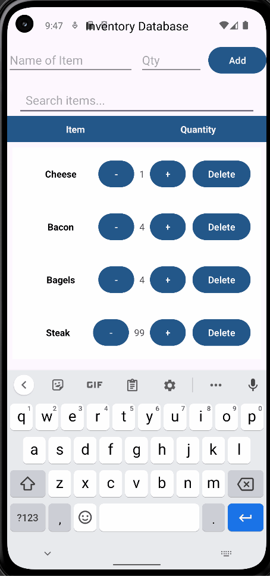
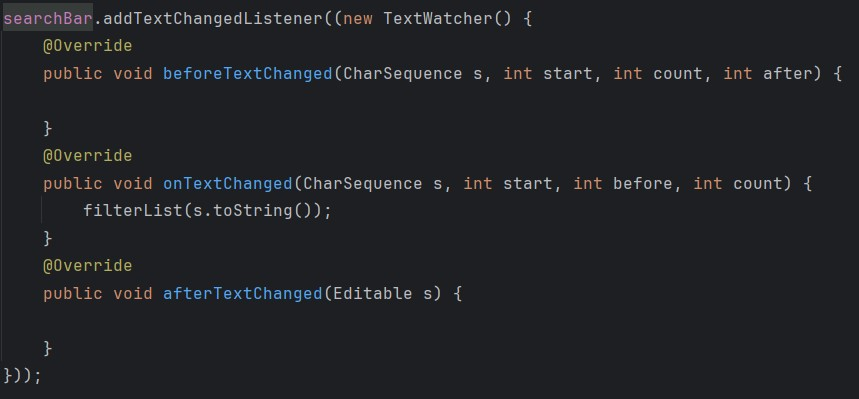
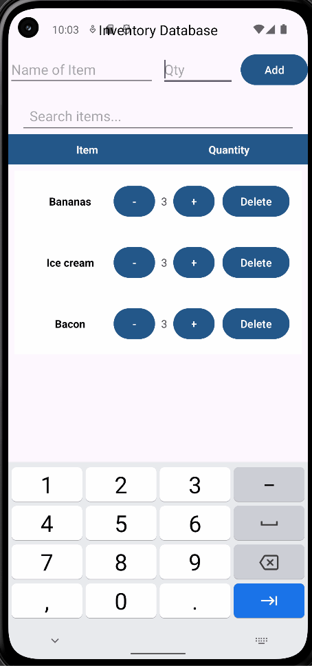
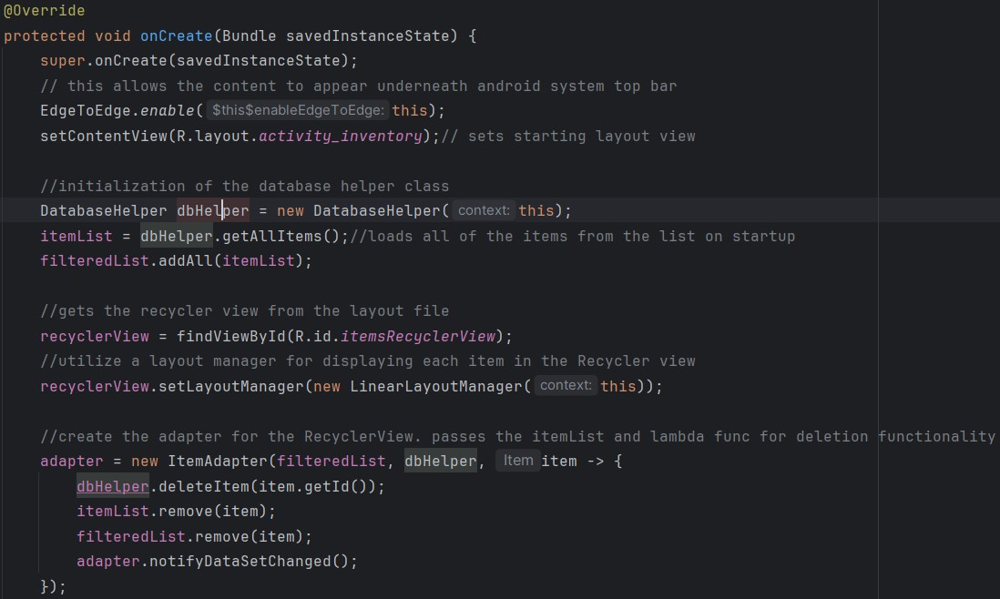

Enhancement One: Software Engineering
For the first enhancement of my project, I expanded the functionality of the application by implementing a form for adding items to the list, a button for deletion and buttons for quantity adjustment. This task required migrating the interface from the original TableView, to a new RecyclerView. This made it possible for the application to scale in a more dynamic way, and allow for a larger list to be created. The controls to increment and decrement the quantity of the items in the list was a nice UI addition as well.
This enhancement presented me with a meaningful challenge, as this was my first time revisiting both this project, and Android development since completing CS-360 at SNHU. The workflow and architecture of Android development is very different than the React-based development that I focus on today, which made this a valuable opportunity for me to revisit these concepts and become more versatile as a developer today.

A snippet of the onClickListener that I created for the addItemBtn

Enhancement Two: Data Structures and Algorithms
The purpose of the second enhancement for this project was to focus on DSA. For the enhancement, I implemented a search feature that allows the user to quickly filter through items on the list by typing the item name into a newly added form. This form is connected to a TextWatcher method that looks for changes in the search form, and updates the list by calling the filterList() function. This feature enhances the usability of the app, especially as the app grows larger, by giving users an effecient method locating items
In addition to the search feature, I also implemented a linear search function to prevent duplicate entries if the user attempts to add the same item twice. This allows for a cleaner more accurate inventory management system.
This enhancement required some research on the part of setting up search functionality within the Android development environment. The linear search function itself was simple enough, however integrating it into the Android dataflow had its challenges.

A snippet of the addTextChangedListener using a TextWatcher to monitor changes in the search bar

Enhancement: Databases
For the third and final enhancement for this artifact, I integrated the project with an SQLite database, which is a lightweight relational database engine built into Android. This addition enable to application to have persistant data for items, including the names and quantity of items. This allows the data to stay intact even after the application is closed and reopened.
The enhancement was especially valuable for my learning, as I had limited experience working with relational databases outside of my school projects, an most of my personal projects use non-relational database systems. Implementing the database layer, working with the DatabaseHelper class, and connecting to the SQLite API provided meaningful hands on experience with structured data management.

Activity initialization with SQLite persistant data loading and RecyclerView setup
